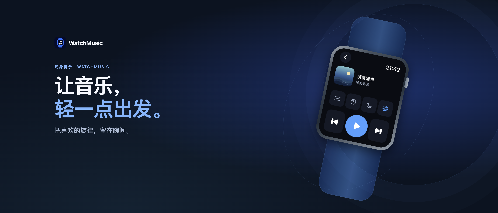
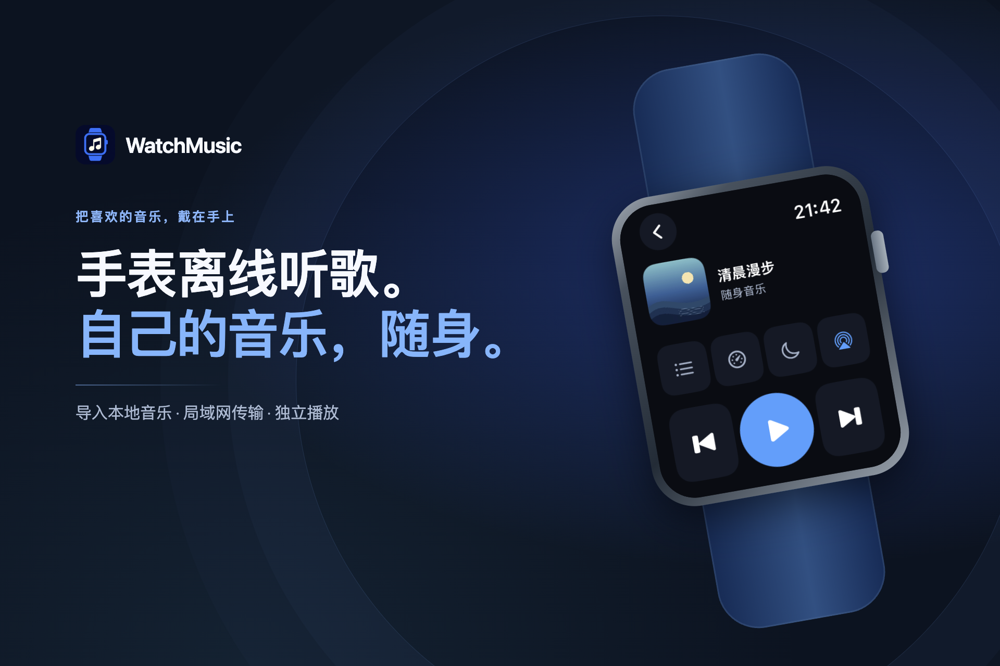
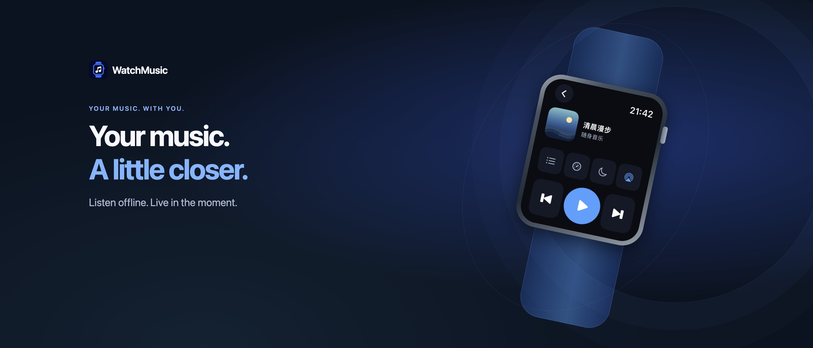
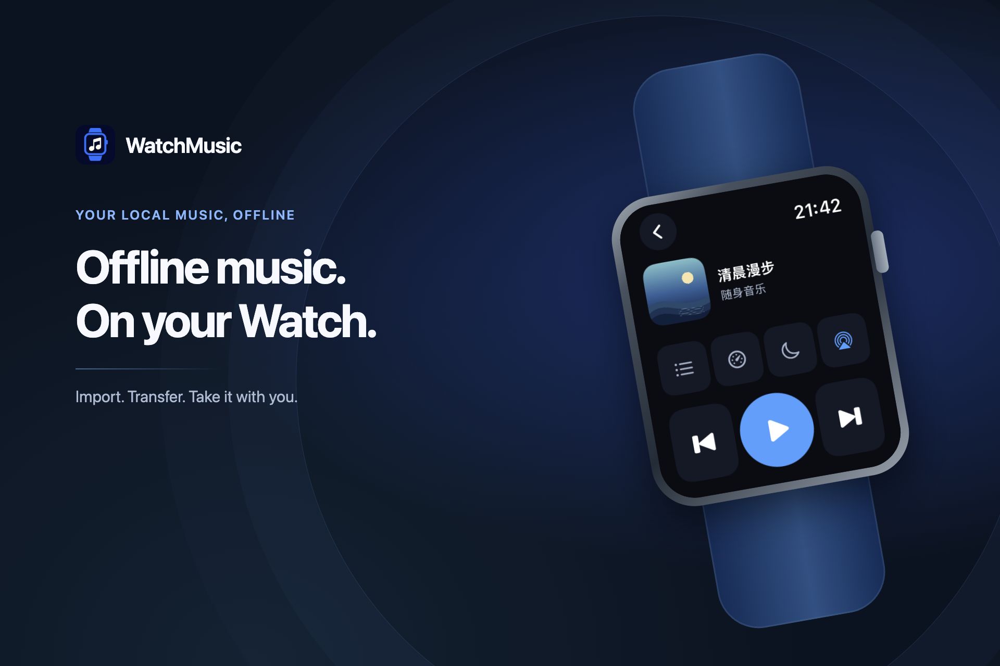

WatchMusic · 上架素材
随身音乐 · 1.0.0 · 2026.10.29
每个平台只提供一种标准截图尺寸；图片点击可打开原图。此页为本地素材预览，网页部署请使用独立的四个 HTML 压缩包。
标题与搜索结果
蓝色品牌 · 腕间离线音乐 · 按展示位分别构图
简体中文




English




iPhone · 1206 × 2622
按 01—04 顺序上传到“带灵动岛的 iPhone（中等显示屏）”栏。英文版只翻译营销短文案，真实应用界面仍是简体中文。
简体中文


English


Apple Watch · 422 × 514
四张原生界面，无设备外框；两种商店语言复用同一组原图。


演示歌曲与封面为本次原创。传输截图使用项目已有预览状态，数字不代表真实测速。查看截图来源
商店文案 · 直接复制
关键词已按较严格的 100 UTF-8 bytes 控制。相关扩展词留在备用词库，避免超过上限或重复堆叠。